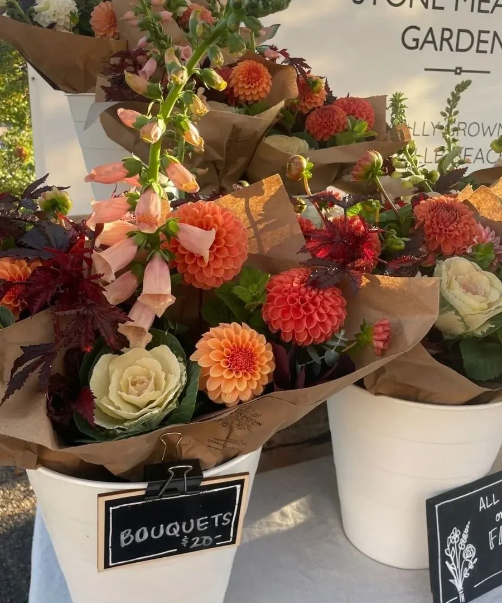
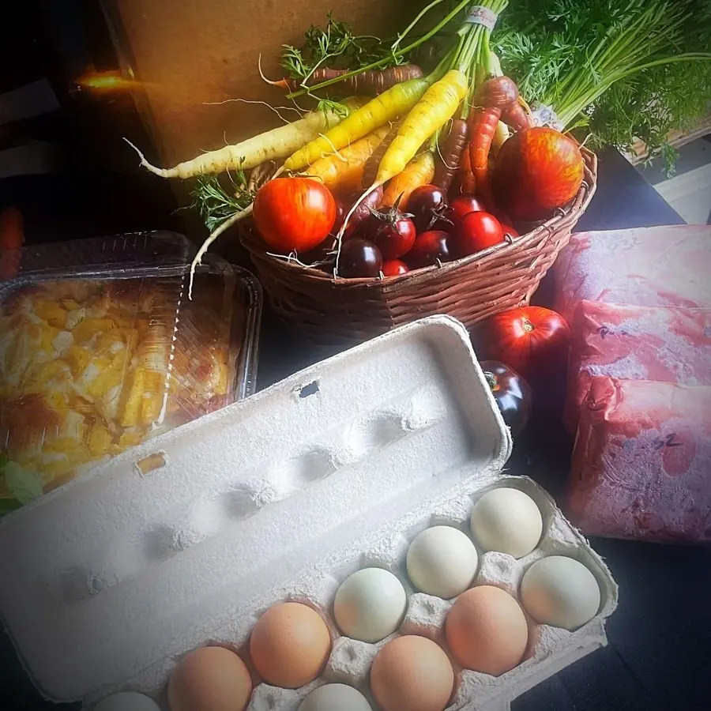

October to May On now
Indoor market
- When
- Saturdays, 9 am to noon
- Where
- The Legion, 66 Victoria St, Annapolis Royal
- This season
- October 17, 2026 to May 2027
Live music, hot food, artisans and locally grown food. Take a stroll through history while supporting local businesses and makers.
9 am to noon at the Legion, 66 Victoria St, Annapolis Royal.

October to May On now
May to October
Summer
96 farmers, bakers, makers and community groups have a table at the market this year. Not every vendor is there every week.
What began in 1976 with just a few farmers and a pot of fresh coffee has grown into a vibrant, bustling hub of over 100 vendors, weather permitting, each offering a taste of what makes this region so special.
From just-picked produce and artisan breads to locally made beer, wine and spirits, the Market is a celebration of everything homegrown and handcrafted. You'll find hot food to enjoy as you wander, fair-trade coffee roasted right here in the Valley, fresh-cut flowers, handmade soaps, pottery, clothing, jewellery, original artwork and more.
Live music fills the air each week. It's part kitchen party, part community gathering, and a true taste of small-town hospitality.
Come early, bring a tote bag, and experience the magic of Market day in Annapolis Royal.

The town crier, a familiar face on Market day.
2026 winter applications are open. Permanent vendors have a set spot every market day. Casual vendors fill in when permanent vendors are away, first come, first served.
How to applyPrices include HST. Payment is due the Thursday before each market day.
If you are interested in performing on our stage during the outdoor markets on Saturdays and Wednesdays, reach out to ask about available dates.
Ask about dates2026 Board of Directors. Chair Dawn Thompson. Co-Chair Jay Stone. Treasurer Janice Friend. Secretary Murray Harris. Directors Sandi Aitken, Dieter Claussing, Bill McKee and Cheryl den Hartog.